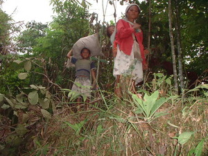

pammubung 
/pammubuŋ/
v.
for someone (egpammubung, migpammubung/impammubung, agent, eg><ø-) to cross (egpammubungen, migpammubung/impammubung/pigpammubung, egpammubungan, impammubungan/migpammubungan/pigpammubungan, location, eg><en-, eg><an-) over the top of a mountain (bubungan)
O. Syn. lampey
Emun ke eggendiyè ka te Gupaku, paayun-ayun ke rè iya pammubung diyè te bubungan.
When you are going to Gupaku, just cross over the top of the mountain.
Meupiya amana ne egpammubungan ka bubungan ne egngaranan te Lantawan su amana ne mapantew.
It is really good to cross over the Lantawan mountain for it was so high than the others.
Hentew buwa ka egpammubung seeyè te bubungan?
Who is that crossing that mountain.
Eng. cross mountain; traverse mountain
OCM: Travel (484)
DDP: Mountain (1.2.1.1)
Online dict status: -
Usage level: R
Updated by: RJH,TME,NJK,QDL,RJH
Last updated: 29/Jul/2014
This page last updated: 03-Jan-2020
Copyright © 2009-2014, Matigsalug Language Christian Association, Inc